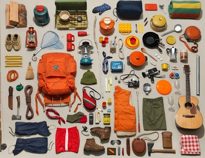
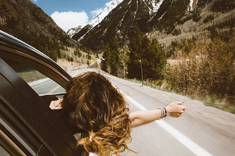
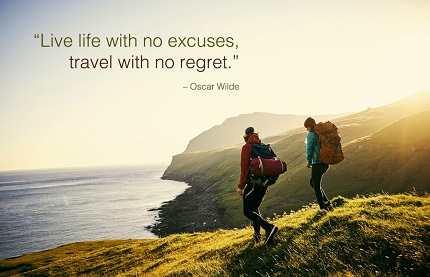
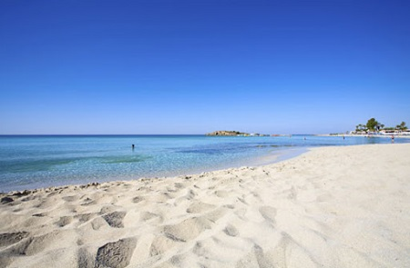
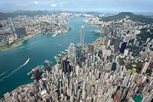

Дневник путешественника / Блог
Приветствую вас в своем блоге!

Впереди целый месяц праздников: День всех влюблённых, 23 февраля и 8 марта До Дня Святого Валентина осталось всего полторы недели, а доставка товаров с AliExpress из Китая в 2020 по понятным причинам теперь под очень большим вопросом А потому ловите 12 идей для подарков Вашим любимым, которые доставят всего за пару дней А так как Вы читаете блог о путешествиях, то и подарки мы выбрали на любой вкус и кошелёк, унисекс, но только для настоящих путешественников!
02 февраля 2020г
Алексей Петров
Лучшие подарки путешественникам: топ-12 идей на День всех влюбленных, 23 февраля и 8 марта 2020

Зеленая карта на автомобиль необходима при поездке на машине за границу: в Белоруссию и другие страны СНГ, в Европу (например, Финляндию, Польшу, Латвию, Литву, Эстонию и т.д.) Зеленая карта или страховка Green Card - это страхование автогражданской ответственности, т.е. по сути аналог ОСАГО, но действующий за пределами России. Делимся актуально информацией по Зеленой карте на 2020 год: сколько стоит, от чего зависит цена, территория действия, где купить и как оформить онлайн + наш опыт и отзыв о покупке Зеленой карты в Полис 812...
02 февраля 2020г
Алекандр Марченков
Зеленая карта на автомобиль: стоимость 2020, как купить онлайн и отзыв о Полис 812

О путешествиях высказывались многие писатели, актеры, философы и древние мудрецы... "Дневник путешественника" представляет подборку лучших афоризмов и цитат о путешествиях от таких известных личностей, как Марк Твен, Джек Лондон, Эрнест Хемингуэй, Рэй Брэдбери, Стивен Кинг, Агата Кристи, Лорд Байрон, Редьярд Киплинг, Пауло Коэльо, Джон Стейнбек, Джек Керуак, Макс Фрай, Генри Миллер, Уильям Берроуз, Альбер Камю, Карлос Кастанеда, Роберт Льюис Стивенсон, Ганс Христиан Андерсен, Льюис Кэррол, Анна Ахматова, Иван Бунин, Константин Хабенский, Владимир Высоцкий, а также Махатма Ганди, Лао-Цзы, Далай Лама, Будда, Пророк Мухаммед, Святой Августин, Аристотель и многие другие... Самая полная подборка 2020
10 января 2020г
Дмитрий Ковчук
Лучшие цитаты о путешествиях - известные высказывания и афоризмы

Обзор всех пляжей Ларнаки: Финикудес, Кастелла, Маккензи, а также пляжи залива Larnaca Bay. На каком лучше отдыхать с детьми, а на каком ловить самолеты? Расположение на карте, информация, описание, фото, туры, отели и наши отзывы.
15 января 2020г
Алексей Петров
Пляжи Ларнаки: Финикудес, Кастелла и Маккензи

Целесообразность и возможность посещения многих достопримечательностей Гонконга зависит от погоды, которая по-настоящему хорошей бывает здесь далеко не всегда. Нам с погодой не повезло... Но, не смотря на это, мы поделимся информацией про заинтересовавшие нас достопримечательности Гонконга в надежде на то, что нашим читателям с погодой повезет больше... Поделимся и полезной информацией про стоимость посещения и как добраться до этих достопримечательностей с отметками на карте...
15 декабря 2018г
Олег Иванов